Captain Cool
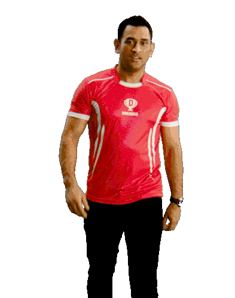
Former India captain Mahendra Singh Dhoni turns 42 today. Known for his calm temperament under pressure, Dhoni has been celebrated by fans and dubbed 'Captain Cool'. He remains the only captain in world cricket to have won all three ICC white-ball trophies - ODI World Cup, T20 World Cup and Champions Trophy.
Mahendra singh dhoni
M.S. Dhoni, in full form Mahendra Singh Dhoni, (born July Ranchi, Bihar [now Jharkhand] state, India), Indian cricketer whose rise to prominence in the early 21st century culminated in his captaincy of the Indian national team that won the one-day Cricket World Cup in 2011.
MS Dhoni: Birth, Family and Education
MS Dhoni was born on July 7, 1981 in Ranchi, Bihar (present-day Jharkhand) in a Hindu Rajput family to Pan Singh and Devki Devi. His paternal village is in the Lamgara block in Almora, Uttarakhand. His father, Pan Singh, moved from Uttarakhand to Ranchi and worked in junior management positions in MECON. Dhoni has a sister and a brother-- Jayanti Gupta (sister) and Narendra Singh Dhoni (Brother). Dhoni did his schooling at DAV Jawahar Vidya Mandir, Ranchi, Jharkhand and excelled in multiple sports such as badminton, football and cricket. He played as a goalkeeper for his football team and played cricket for a local club. Dhoni showed impressive wicket-keeping skills at the Commando Cricket Club during and was picked up for Vinoo Mankad Trophy Under-16 Championship for the 1997-98 session and played well. After completing High School, Dhoni focussed on Cricket. During 2001-2003, Dhoni was a TTE (Travelling Ticket Examiner) at Kharagpur Railway Station, under South Eastern Railway in West Bengal. Dhoni made his international debut in . His talent with the bat came to the fore in an innings of runs against Pakistan in his fifth international match. Within a year he joined the India Test team, where he quickly established himself with a century ( or more runs in a single innings) against Pakistan. Despite his inexperience, Dhoni took over the captaincy of the one-day side in and led India to the Twenty20 (T20) world title. Series wins over Australia and Sri Lanka, among others, moved India to the top of the International Cricket Council (ICC) Test rankings for the first time in December Dhoni was honoured for his play with the ICC One Day International Player of the Year Award in In the one-day World Cup, Dhoni’s dashing innings of not out—in front of a home crowd in Mumbai—paved the way for India’s victory over Sri Lanka in the final. He also led India to an appearance in the semifinals of the 2015 Cricket World Cup. Dhoni stopped serving as India’s captain in having led his country in international matches, the most for a captain in the sport’s history. Three years later he retired from international competition.
 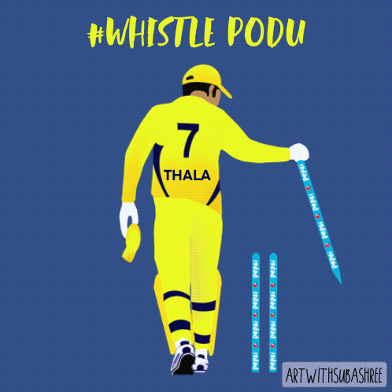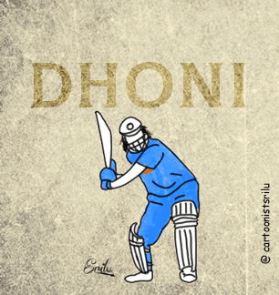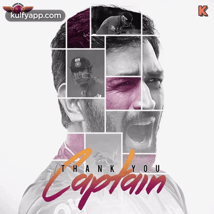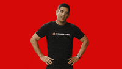
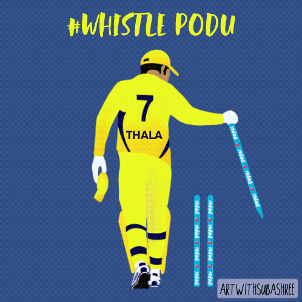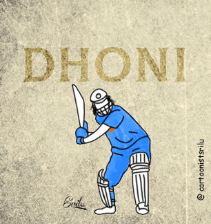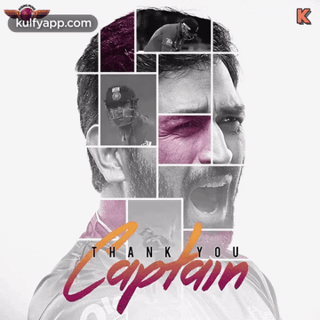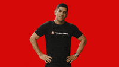 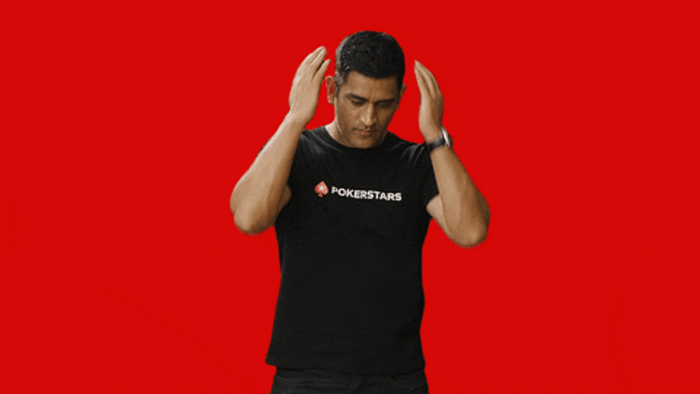 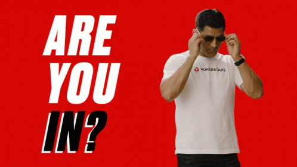
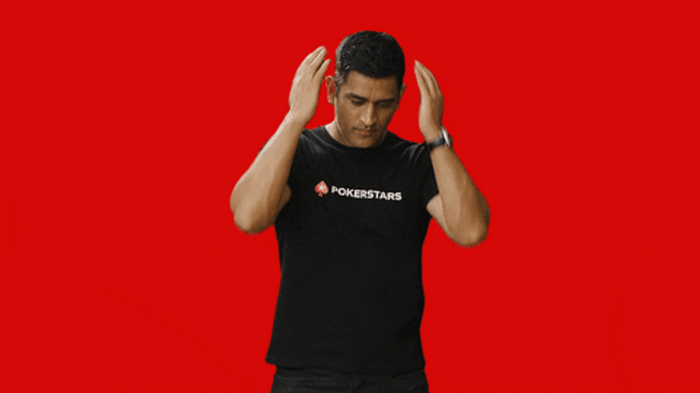 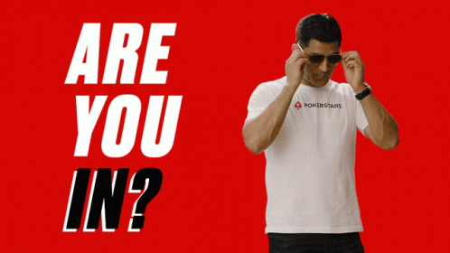